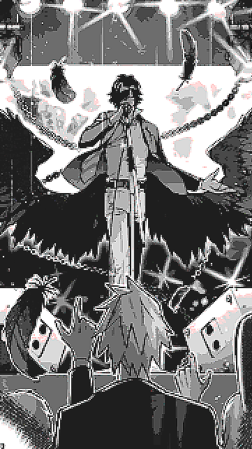

Stats
Name Aimono Jyushi / 四十物十四
MC Name: 14th Moon
Occupation: Vocalist of ArgoξOrchestra / アルゴξ楽団
Age: 18
Bday: April 14
Sign: Aries
Height: 185cm
Blood Type: AB
Likes: Amanda, Mirrors
Dislikes: Oppressive people, Enclosed spaces
Voice Actor: Sakakihara Yuki
Stage Actor: Daigo Kato
Affiliations
Bad Ass Temple
The group Jyushi was recruited to for the D.R.B. It is comprised of the group leader Kuko, the second member Jyushi, and the third member Hitoya.
ArgoξOrchestra
A Visual Kei band that Jyushi joined during his school years. The names of the members are unknown, and their appearances differ between adaption.

Come, by all means, I shall introduce you to my world!
Jyushi is the vocalist of the fictional band, ArgoξOrchestra and the second member of Bad Ass Temple. He's officially described as a self-absorbed crybaby, due to his obsession with his appearance and tendency to burst into tears quite easily. There's nothing he loves more than singing, and his best friend Amanda who is a plush toy pig gifted to him by his Grandma.
Jyushi Fun Facts
- Jyushi's character colour is hot pink.
- Jyushi's favourite meal is Napolitan.
- Jyushi's least favourite food is roe.
- The first time Amanda's design was ever shown was on a piece of merchandise.
- BAT were announced to join the series on September 8th, 2019 during Hypmic's 4th live.
- Jyushi's profile quote 'Never never never give up!' is attributed to Winston Churchill.
- Jyushi is right-handed.
- Jyushi's favourite band is Dreams and Gods are Fake (夢と神は紛物 / Yume to Kami wa Magaimono).
- Jyushi used to work at "WcDonald's".
- Jyushi refers to Kuko as "Master" when in Chuunibyo mode. He refers to Hitoya as "My God" in a one-off ARB voice line.
- ArgoξOrchestra's logo resembles Moi Dix Mois' logo.
- The guitar that Hitoya gifted to Jyushi is a Gretch White Falcon.
- ArgoξOrchestra's song, Akuma no Hana was previewed in the drama track "Harmonious Cooperation" years before it got a full release.
Jyushi's first appearance in the series is in the drama track, "The Conviction Of The Heart Can Never Be Broken!". He approaches Hitoya, the lawyer who has been looking out for him from a young age, about losing Amanda. Jyushi insists that it's extremely awful and would bring anyone to tears, but Hitoya disagrees and levels with Jyushi, telling him that he needs to learn to be independant. After offering Jyushi a few suggestions, they travel to Kugen temple where they meet Kuko, who is forced by his dad to assist Jyushi in learning to cope with his anxiety. Shenanigans ensue, and Kuko recruits the both of them after challenging Jyushi in order to judge whether he has the conviction to change his own life for the better. In that moment, Kuko declares them family and they've been supporting each other since.
Jyushi is extremely passionate about what he loves, never compromising his interests for anyone despite how much it scares him sometimes. It's his goal in life to inspire people with his music in the same way his favourite musicians helped him get through the worst periods of his life, and he won't let anyone tell him he can't. Jyushi is often regarded as a weak person or a pushover, but that couldn't be further from the truth; he will always do his best to stand up for what he believes in. Even if that means weeping the whole way through.
Let’s look at the stars and laugh, Amanda.
This is gonna be a little cringe but it's okay. That's what an obscure webpage is for.
I don't even know where to begin with why I like Jyushi. Despite being my fav of all time, I don't usually talk about him at length. It took me a while to write his description because there's so much I could say about him and I want to take care in sharing my thoughts about him and do him justice, for the odd case someone who doesn't know him comes across this and reads through it LOL. That being said, I wrote a very surface level description... I'll probably come back and edit it several times over ^^;

I first met Jyushi on the 7th of December, 2019. I'd been listening to Hypmic music on and off but I wasn't too overly invested. I was talking to a few friends who liked the series when they told me that a new division had been added to the series not too long ago! One of my friends said I might like Jyushi and sent me his first solo, Moonlight Shadow. It was downhill from there because I instantly became obsessed with his style and his theatric personality. I didn't use Last.fm back then, but I wish I had a record of how much I listened to it...
To grossly boil down three years of following him and learning about him and consuming every piece of content I could find, Jyushi played a major role in helping me discover the things I like and what I now associate with myself. Looking back on it, those interests were always there but I may have never had the courage to indulge in them without meeting him and witnessing his passion. In that way, he's like an idol to me! Even if he's only fictional, I truly feel like he's achieved his goal of inspiring people in the real world. I know so many people who relate and look up to him, who have found a love of fashion and music thanks to him, and who have been able to persevere thanks to the courage he's given them.
Shoutout to Jyushi all my friends love Jyushi.
In this parallel universe where Icarus survived, thank you for the encore of that song.
This is meant to be the part where I write analysis of his characyer and stuff but I'm too tired rn I'll add it later. Also my opinions are generally cringe and not very based and I worry about interpreting him and portraying him wrong so I'll have to spend some time thinking about it...
Some plans include: Jyushi's association with angels, interesting comparisons between Jyushi and Ramuda, general BAT dynamic stuff and song lyric analysis...
Painting castles in the sky with our flow...
I already post my most recent art in my gallery, so this section is like an archive for some of my older Jyushi art. Please excuse the wonky old anatomy and whatnot. I think it's funny how you can see the evolution of my art through him...
Burn up this life and dance.
A proper list of my collection can be seen on my figure collection but here's some funny pics of stuff...